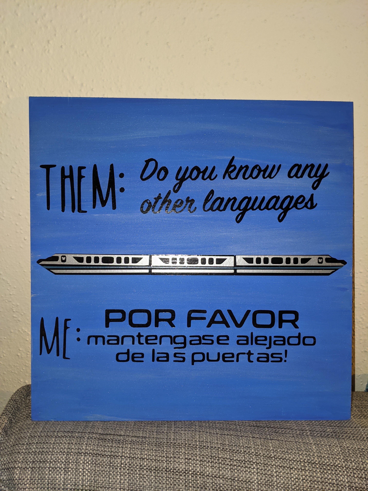
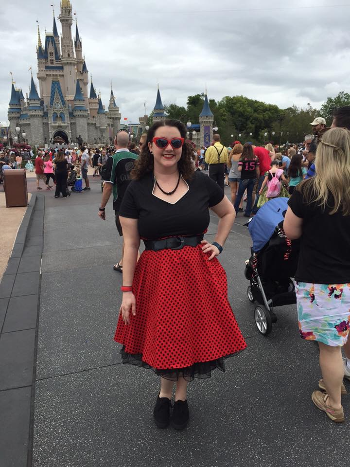
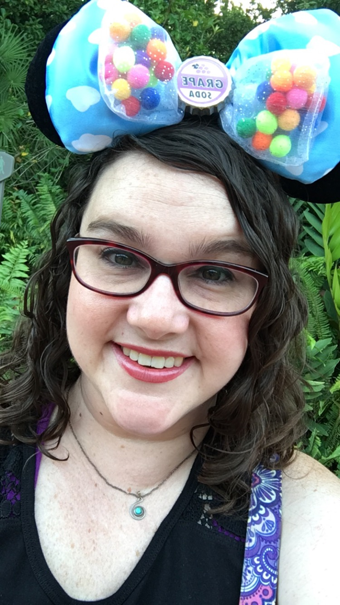
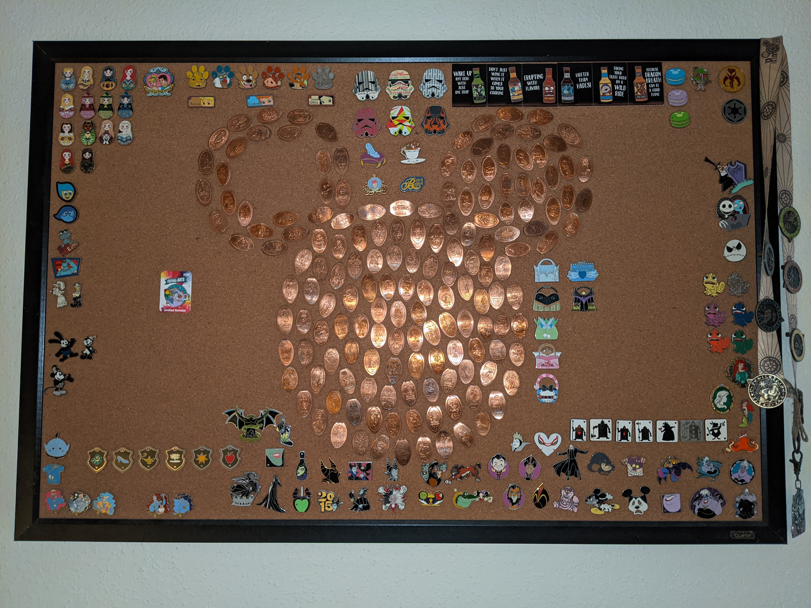
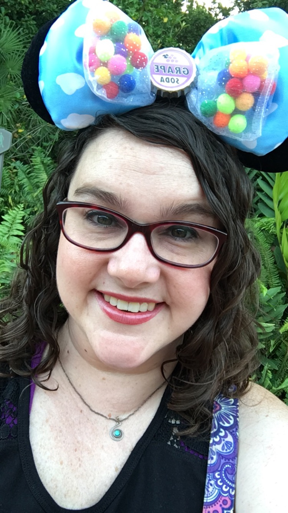
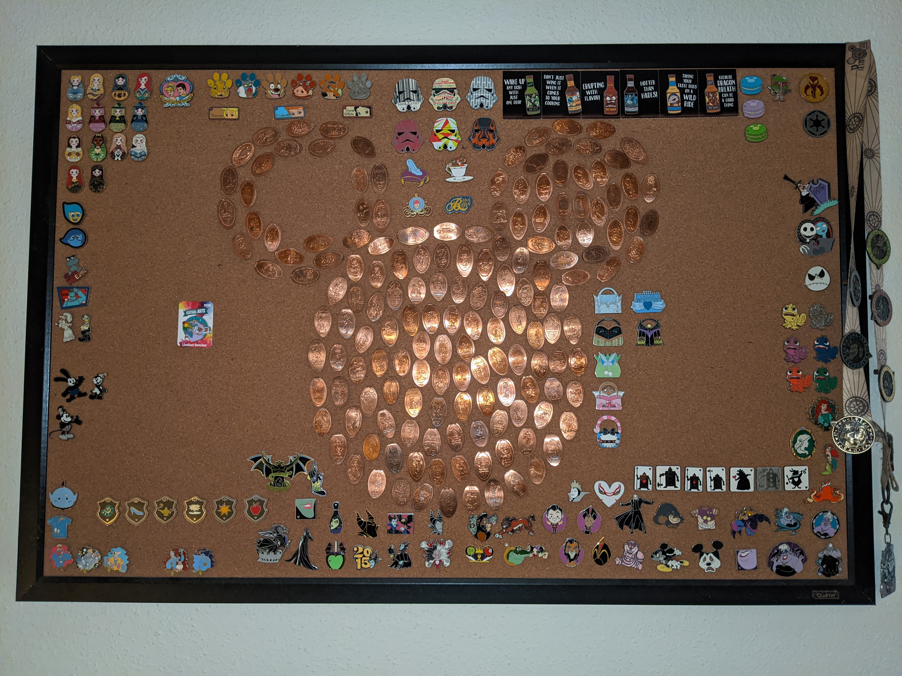

Disney Annual Pass holder!
One of my favorite hobbies is being a Disney Annual Pass holder. Going to Disney always makes me so happy, whether
we are going for a week vacation or just going for a few hours. Crossing under the Welcome to Walt Disney World sign
makes my face light up every time as if I am a kid.

During The Pandemic
Unfortunately with the pandemic, we made the hard decision of letting our Annual Passes expire but I know that one
day I will be a Disney Annual Pass holder again. During this pandemic, we are getting by with watching a lot of
movies and shows on Disney+.
Some of the Disney+ Movies and Shows we have been watching:
- Marvel Movies
- Magic of Disney's Animal Kingdom
- One Day at Disney
- Disney Prop Culture
Extra Disney Magic
You may ask how can being a Disney Annual Pass holder be a hobby, but there are many things that I
enjoy doing when going going to Disney World that make my experience even better.
- I dress up for Dapper Days or Disney Bounding
- I collect Disney "Ears"
- I Pin Trade with the Cast Members
- I try out the different Restaurants on Disney property
- I enjoy seeing different concerts
Some Fun Pictures

Me Disney Bounding as Minnie Mouse for Dapper Dapper Days
 This is my Collection of Disney Ears, one set is an Interchangeable Bow Set!

Me wearing one of her many sets of Disney Ears, this set is to represent the movie Up

This is our Pin/Penny Board, these are all the Pins that we do not Trade. The Pennies are all pennies that
came from Disney's various pressed penny machines
This is my Collection of Disney Ears, one set is an Interchangeable Bow Set!

Me wearing one of her many sets of Disney Ears, this set is to represent the movie Up

This is our Pin/Penny Board, these are all the Pins that we do not Trade. The Pennies are all pennies that
came from Disney's various pressed penny machines
 The band Bodh'aktan performing live at the Canada Pavilion in Epcot
The band Bodh'aktan performing live at the Canada Pavilion in Epcot